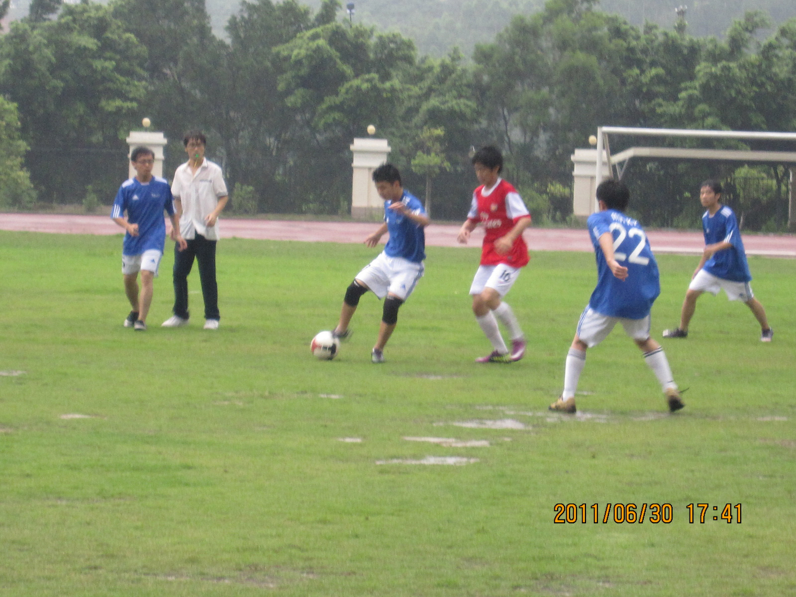
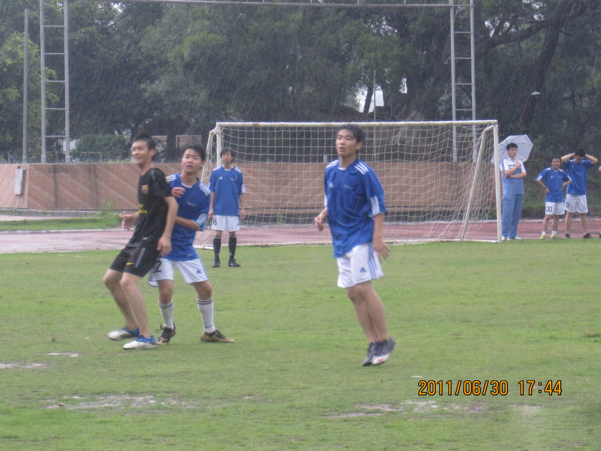
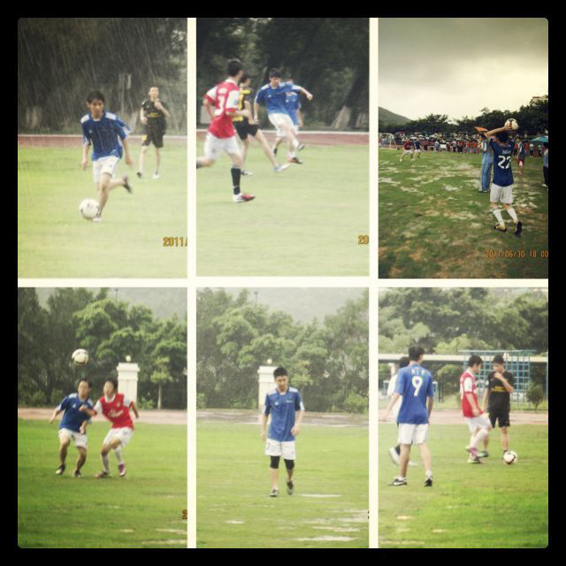
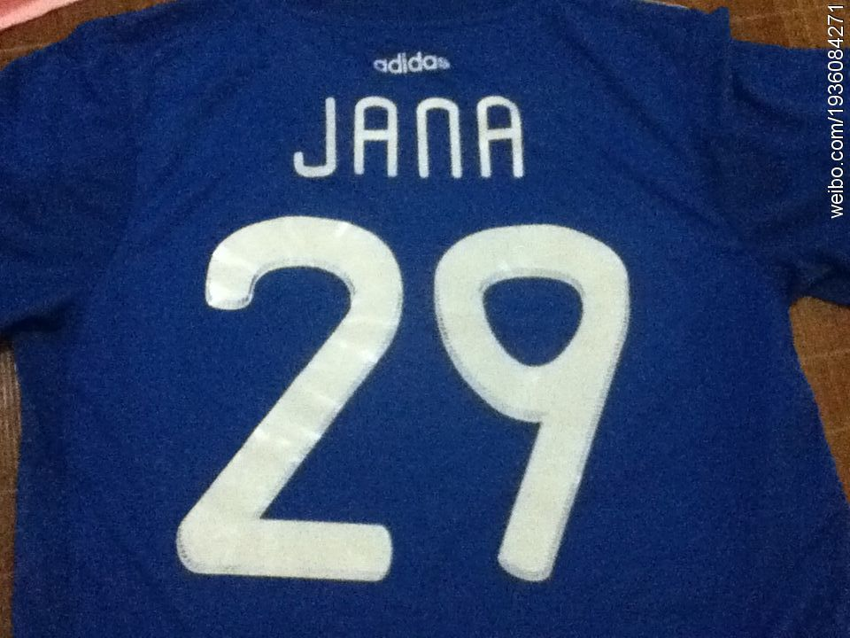

最近四年一度的世界杯又来了。这几天，只要是我看我喜欢球队的比赛，貌似最终都打平了，西班牙平了葡萄牙，阿根廷平了冰岛。当然，德国队喜闻乐见的输了，还看了巴西平的那场。仿佛有股魔咒，这届世界杯冷门迭起。
不得不说，世界杯的举办时间，一下子把我拉回了高中的那个夏天。和大多数的回忆相比来说，那个夏天并不是一个美好的夏天，但是感觉一切都尽在眼前，或许正是因为刻苦，所以才能铭记于心。
我和良哥还有黄龟（我们仨是初中同学），碰巧在高二的时候，抽签组成了02-18班级联队，一起出战班级联赛。
其实高一的时候，我们三个在紫荆的同学的邀请下，组成过一支颇为失败的俱乐部，为什么这么说呢？因为这支俱乐部的战绩几乎全败，唯一的一场平局还是因为对上了联赛最弱的一支队伍，在那场比赛中，我们久攻不下。最后以倒数第二的联赛排名结束了高一学期。
到了高二的时候，学校开始组织班级联赛了，抽签是一个文科班搭配一个理科班，结果我们2班抽到了18班，我们三个又抽到了一起。怎么说呢，应该算是命运吧。
其实我们的联队实力强劲，攻守兼备，我和良哥作为主力中卫出战，黄龟作为中场。淘汰赛一路切瓜砍菜，不记得赢了多少场，但是一路有惊无险的来到了决赛。不得不说，从一开始，我们就知道决赛对手强劲，几个校队主力，同时也是俱乐部联赛上游队伍的主力。相比起来，我们虽然实力稍低一点，但是一点也不虚，做好了充足的心理准备
夏天的广东是多雨的，并不像北方的蒙蒙细雨，更是倾盆而下的暴雨，加上我们学校地处山脚，湿气厚重。赛前的中午，一股高气压笼罩着整个学校，让人倍感闷热，所有的迹象都显示，下午会有一场暴雨，一场恶战。

决赛如期进行，开场不久，雨水如期而至。渐渐的，从开场的小雨变成了暴雨，随着时间的推进，我们全部人全身都被雨水浸透了，球鞋也灌满了水，袜子黏在了脚上，因为水的重量，脚也变得沉重了起来。

渐渐的，场地已经变得泥泞起来了，变得坑坑洼洼的，禁区线和其他的辅助线也被雨水冲得模糊，让人难以辨别。每当我们想要带球或者是传球的时候，球都已经没办法按照我们的想法运动，当足球划过水坑时，有时球速骤降，或是干脆被水坑截停。
双方都踢得非常的狼狈，因为暴雨的缘故，本该体现在球场的跑位，战术，传球，技术都没有了意义。我们好像成为了一群在泥中摔跤的选手，竭尽全力的去抢夺每一个球，想要将足球大脚踢到对方的禁区，让己方的前锋去抢点。
一段时间内踢得非常的大开大合，非常的野性，就像两支英超中下游球队一样。双方都像是不知疲惫的野狼，球被抢了，马上就追上去抢回来，球被踢了过来，马上就把它重新踢回去。
不得不说，踢得非常的艰难，最后结果1:0，我们输了，因为一个禁区外的手球，我们的守门员在禁区外用手摸球了，其实这主要不是他的问题，因为暴雨的缘故，没有看清楚禁区线导致了。这个手球被判了一个任意球，这个任意球被传到了禁区内，最终被对方头球顶了进去。
不知道是不是老天开眼，随着终场哨声的响起，暴雨也停了。感觉到了一丝落寞，不知是雨水，是汗水，还是眼泪，抑或是三者夹杂在一起，调和成了一杯苦涩的鸡尾酒，整个夏天沉醉其中，不能自拔。

后来到了大学，大学的足球氛围就没有高中这么浓厚了，虽然也加入了理学院的足球队，但是已经很少踢球了，比赛也非常的少。在大二的时候成为了理学院足球队队长，这只是单纯因为没有别的人选了……理学院踢球的人实在是太少了。
想起每次足球比赛的时候，学长们东凑西凑才能勉强凑够11人，还记得有场比赛，怎么叫上半场都只有7个人过来，但是比赛又没办法取消，就7个人踢了上半场，结果0:0守住了，下半场来了4个人，凑够了11人，结果被人4:0了，现在想想，当时果然对方上半场还是放了我们一马。
大二和老队长一起去大一招人的时候，那届新生男生虽然比我这届多，但是，大家都更喜欢打篮球。
再后来就不知道了，直到现在，好久没有正正式式踢过一场球了。
